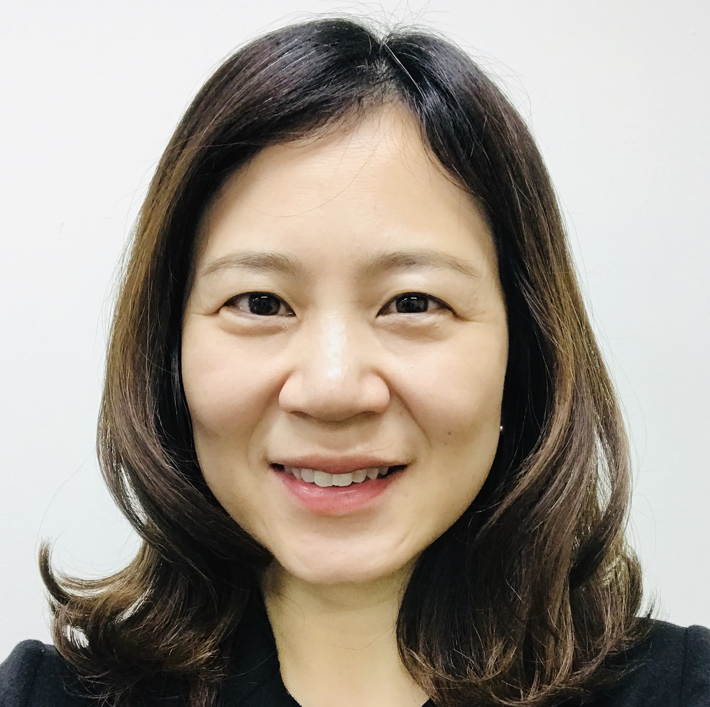
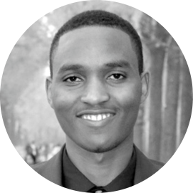
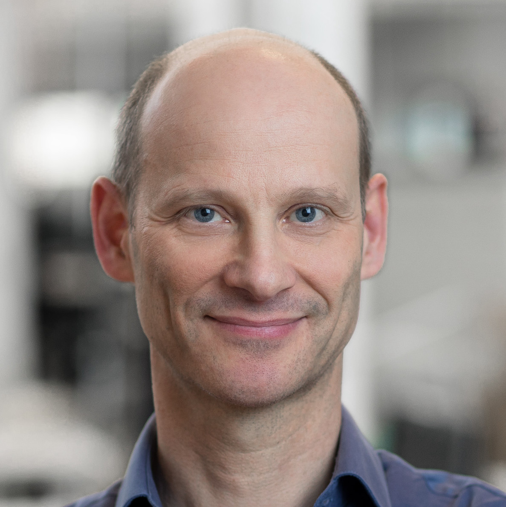
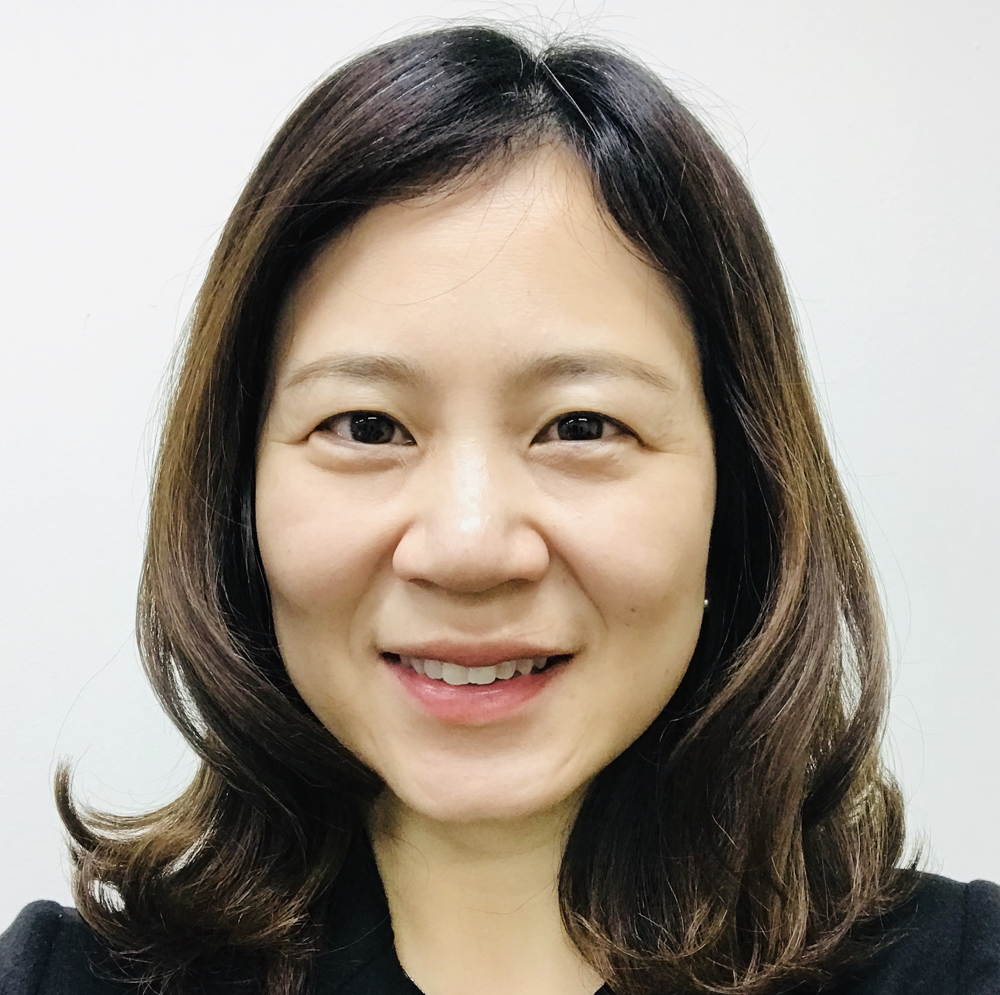
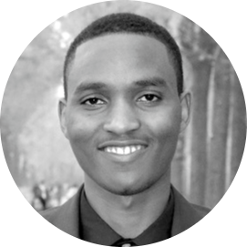
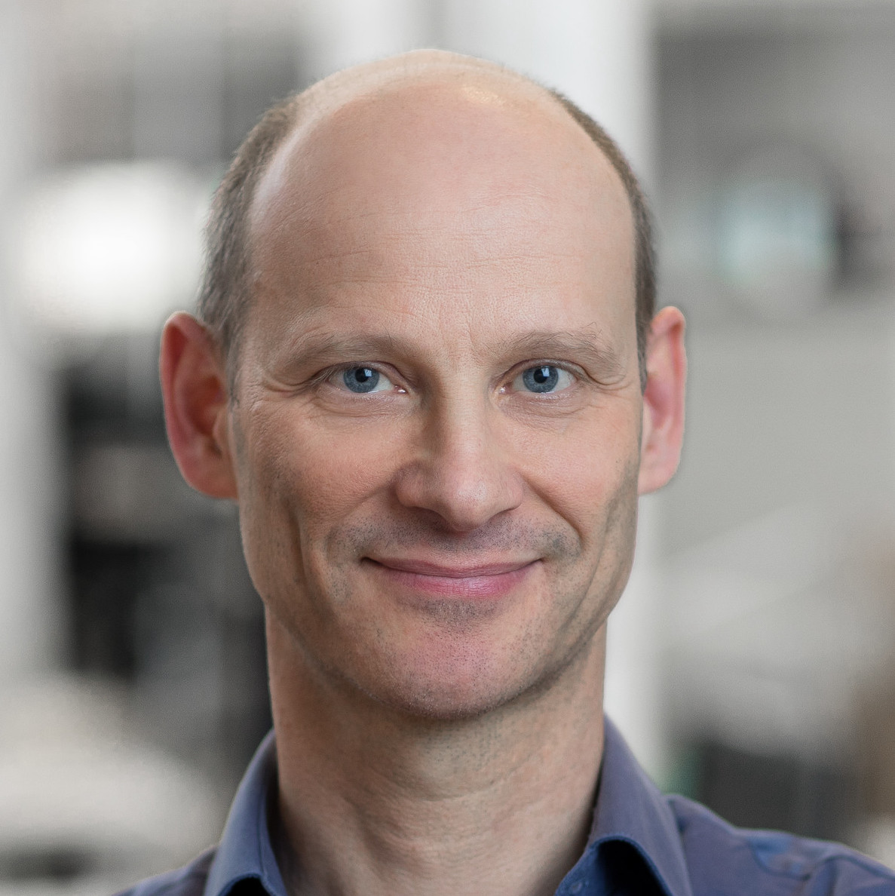

Invited Speakers
|  |  | ||
| Kathleen McKeown | Graham Neubig | Alice Oh | Andre Niyongabo Rubungo |
|  |

|
||
| Sebastian Ruder | Holger Schwenk | Avi Sil |
State-of-the-art NLP technologies such as neural question answering or information retrieval systems have enabled many people to access information efficiently. However, these advances have been made in an English-first way, leaving other languages behind. Large-scale multilingual pre-trained models have achieved significant performance improvements on many multilingual NLP tasks where input text is provided. Yet, on knowledge-intensive tasks that require retrieving knowledge and generating output, we observe limited progress. Moreover, in many languages, existing knowledge sources are critically limited. This workshop addresses challenges for building information access systems in many languages. In particular, we attempt to discuss several core challenges in this field, e.g.:
We cover diverse topics of cross-lingual knowledge-intensive NLP tasks such as cross-lingual question answering, information retrieval, fact verification, and information extraction. By grouping those tasks into a cross-lingual information access topic, we encourage the communities to work together towards building a general framework that supports multilingual information access.
Bio: Avi Sil is a Principal Research Scientist and a Research Manager in the NLP team at IBM Research AI. He manages the Question Answering team (comprising of research scientists and engineers) that works on industry scale NLP and Deep Learning algorithms. His team's system called `GAAMA' has obtained the top scores in public benchmark datasets e.g. Natural Questions, TyDI and has published several papers on question answering. He is the Chair of the NLP professional community of IBM. Avi is a Senior Program Committee Member and the Area Chair in Question Answering for ACL and is actively involved in the NLP conferences by giving tutorials (ACL 2018, EMNLP 2021), organizing a workshop (ACL 2018) and also the Demo Chair (NAACL 2021, 2022). He was also the track coordinator for the Entity Discovery and Linking track at the Text Analysis Conference (TAC) organized by the National Institute of Standards and Technology (NIST).
Abstract: Currently, multilingual information access (MIA) particularly by Question Answering (QA) has a major problem. Most QA research software sits in someone's own Github repository and none of those softwares work easily with each other. This problem is exacerbated in different modalities of QA research: document retrieval, reading comprehension, QA over tables, QA over images, videos etc. We're introducting PrimeQA, a one-stop shop for all Open QA problems. I'll talk about how PrimeQA is remediating the MIA problem by bringing together all these QA software/ solutions as building blocks and creating a one repository where a user/student can come in and quickly replicate the latest/greatest QA paper/publication that’s at the top of a leaderboard (e.g. XOR TyDi) without re-inventing the wheel.
Bio: Sebastian Ruder is a research scientist at Google Research working on NLP for under-represented languages and based in Berlin. He was previously a research scientist at DeepMind, London. He completed his Ph.D. in Natural Language Processing at the Insight Research Centre for Data Analytics, while working as a research scientist at Dublin-based text analytics startup AYLIEN. Previously, he studied Computational Linguistics at the University of Heidelberg, Germany and at Trinity College, Dublin. He is interested in cross-lingual learning and transfer learning for NLP and making ML and NLP more accessible.
Abstract: Pre-trained multilingual models are strong baselines for multilingual applications but they often lack capacity and underperform when dealing with under-represented languages. In this talk, I will discuss work on building parameter-efficient models, which has recently received increased attention. I will discuss how such methods can be used to specialize models to specific languages, enabling strong performance even on unseen languages. I will demonstrate the benefits of this methodology such as increased robustness (to different hyper-parameter choices as well as to catastrophic forgetting) and efficiency (in terms of time, space, and samples). Finally, I will highlight future directions in this area.
Abstract: Subword and character-based language models still cannot capture non-concatenative morphological information due to character fusion in morphologically rich languages. In this talk, I will present KinyaBERT, a simple yet effective two-tier BERT architecture that uses the combination of a morphological analyzer and BPE at the input level to explicitly represent morphological compositionality. A robust set of experimental results reveal that KinyaBERT outperforms solid baselines by 2% in F1 score on a named entity recognition task and by 4.3% in average score of a machine-translated GLUE benchmark. KinyaBERT fine-tuning has better convergence and achieves more robust results on multiple tasks even in the presence of translation noise.
Bio:
Bio: Kathleen R. McKeown is the Henry and Gertrude Rothschild Professor of Computer Science at Columbia University and is also the Founding Director of the Data Science Institute at Columbia. She served as the Director from July 2012 - June 2017. She served as Department Chair from 1998-2003 and as Vice Dean for Research for the School of Engineering and Applied Science for two years. McKeown received a Ph.D. in Computer Science from the University of Pennsylvania in 1982 and has been at Columbia since then. Her research interests include text summarization, natural language generation, multi-media explanation, question-answering and multi-lingual applications.
In 1985 she received a National Science Foundation Presidential Young Investigator Award, in 1991 she received a National Science Foundation Faculty Award for Women, in 1994 she was selected as a AAAI Fellow, in 2003 she was elected as an ACM Fellow, and in 2012 she was selected as one of the Founding Fellows of the Association for Computational Linguistics. In 2010, she received the Anita Borg Women of Vision Award in Innovation for her work on text summarization. McKeown is also quite active nationally. She has served as President, Vice President, and Secretary-Treasurer of the Association of Computational Linguistics. She has also served as a board member of the Computing Research Association and as secretary of the board.
Bio: Graham Neubig is an associate professor at the Language Technologies Institute of Carnegie Mellon University. His research focuses on multilingual natural language processing, natural language interfaces to computers, and machine learning methods for NLP, with the final goal of every person in the world being able to communicate with each-other, and with computers in their own language. He also contributes to making NLP research more accessible through open publishing of research papers, advanced NLP course materials and video lectures, and open-source software, all of which are available on his web site.
Abstract: In this talk, I will discuss ongoing work on building a benchmark to measure the progress of natural language processing over every language in the world. I will first describe our methodology, and then do a demo of our current benchmark prototype and make an open call for others to join in its development.
Bio: Holger Schwenk received his Master's degree from the University of Karlsruhe in 1992 and his PhD degree from the University Paris 6 in 1996, both in Computer Science. He then did postdoctorate studies at the University of Montreal and at the International Computer Science Institute in Berkeley. He joined academia in 1998 and he was a full professor at the University of Le Mans until 2015. Holger Schwenk joined Meta AI Research in June 2015.
His research activities focus on new machine learning algorithms with application to human/machine communication, in particular statistical machine translation and multilingual NLP.
Abstract: Multilingual sentence representations are very useful to extend NLP applications to more languages. One particular application is bitext mining based on a similarity measure in such a multilingual representation space. Well known approaches are LASER or LABSE, but both are limited to about 100 languages.
In this talk, we report our work to extend multilingual sentence representations to 200 languages. We discuss challenges when handling low-resource languages, in particular collection of resources to train and evaluate such models. Those sentence encoders are used to mine more than one billion sentences of bitexts in 148 languages. Finally, we report the impact of the mined data when training a massively multilingual NMT system.
Bio: Alice Oh is a Professor in the School of Computing at KAIST. She received her MS in 2000 from Carnegie Mellon University and PhD in 2008 from MIT. Her major research area is at the intersection of natural language processing and computational social science. Within natural language processing, she studies various models designed for analyzing written text including social media posts, news articles, and personal conversations. She has served as Tutorial Chair for NeurIPS 2019, Diversity & Inclusion Chair for ICLR 2019, and Program Chair for ICLR 2021. She is serving as Program Chair for NeurIPS 2022 and General Chair for ACM FAccT 2022.
Abstract: Korean and Indonesian are considerably different from English, and both have recently gained attention from researchers building datasets for a diverse set of languages. I will start this talk by sharing our research on ethnic bias in BERT language models in six different languages which illustrates the importance of studying multiple languages. I will then describe our efforts in building datasets for Korean and Indonesian and the main challenge of dataset building when the sources of data are much smaller compared to English and other major languages. I will also share our research on historical documents written in ancient Korean which is not understood and must be translated into modern Korean.
|  |  | ||
| Kathleen McKeown | Graham Neubig | Alice Oh | Andre Niyongabo Rubungo |
|  |
|
||
| Sebastian Ruder | Holger Schwenk | Avi Sil |

|

|

|
|
| Akari Asai | Eunsol Choi | Jonathan H. Clark | Junjie Hu |

|

|

|
|
| Chia-Hsuan (Michael) Lee | Jungo Kasai | Shayne Longpre | Ikuya Yamada |
| Rui Zhang |